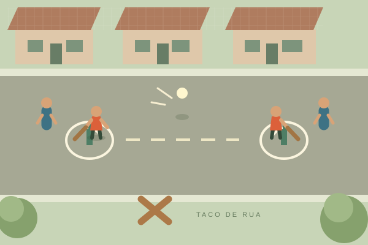

PODE CHAMAR A TURMA
A rua inteira
cabe aqui.
As brincadeiras que marcaram a infância,
agora a um clique de distância.

BORAJOGAR?UM PEDACINHO DA NOSSA RUA.
ESCOLHA SUA PRÓXIMA MEMÓRIA
O recreio começou.
Uma coleção que está só começando.
O Taco abriu a brincadeira. Tem espaço na rua para muitas outras memórias.